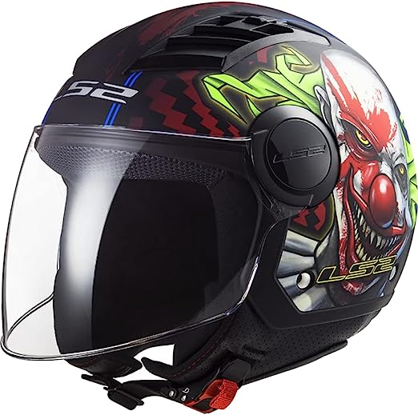
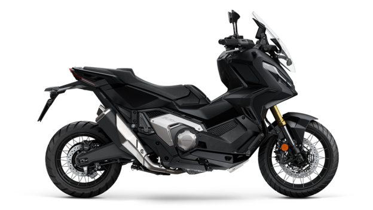

Panoramica
La Honda X-ADV 750 è una crossover tra scooter e adventure-bike pensata per chi cerca comfort urbano e capacità su strada sterrata. Questa pagina presenta immagini realistiche di riferimento, descrizioni e informazioni pratiche sul veicolo e su un casco dallo stile "Joker".
Caratteristiche principali
- Configurazione motore: bicilindrico parallelo di cilindrata intorno ai 750 cc (valore indicativo).
- Trasmissione: disponibile con cambio automatico a doppia frizione (DCT) per guida fluida in città.
- Ergonomia: posizione di guida rialzata, protezione dal vento e comodi vani portaoggetti.
- Sospensioni: assetto studiato per garantire stabilità su asfalto e comfort su brevi tratti non asfaltati.
Casco — Stile "Joker"

Il casco in stile "Joker" qui mostrato è una rappresentazione fotografica: colori contrastanti, grafiche forti e un design pensato per impatto visivo. Quando si sceglie un casco, la priorità è la sicurezza e la conformità alle normative locali.
Caratteristiche importanti
- Materiali: scocca in fibra/composito o policarbonato con buon assorbimento degli impatti.
- Omologazioni: verificare la presenza di certificazioni come ECE 22.05/22.06 o DOT a seconda del mercato.
- Comfort: imbottiture rimovibili e lavabili, regolazione efficiente e buona ventilazione.
- Visibilità: visiera con trattamento antiappannamento e anti-graffio; opzioni per schermi scuri o fotocromatici.
Consigli per l'acquisto
Prova sempre il casco prima dell'acquisto, assicurati che calzi correttamente (non troppo largo né troppo stretto) e controlla le date di produzione/validità. Le grafiche come quelle "Joker" sono popolari, ma non sacrificare la sicurezza per l'estetica.
Confronto pratico e suggerimenti finali
La X-ADV è una scelta interessante se cerchi un mix tra praticità urbana e capacità di esplorazione leggera. Abbina sempre il giusto equipaggiamento: casco omologato, giacca con protezioni, guanti e stivali adeguati. Per chi viaggia spesso, considera la versione con DCT per ridurre l'affaticamento nelle percorrenze a bassa velocità.
